どこか遠くの場所で
2018.10 / Exhibition
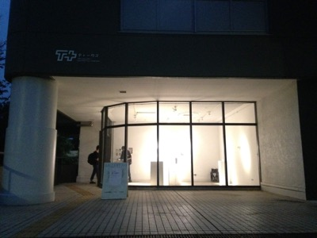
 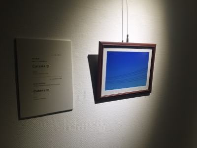
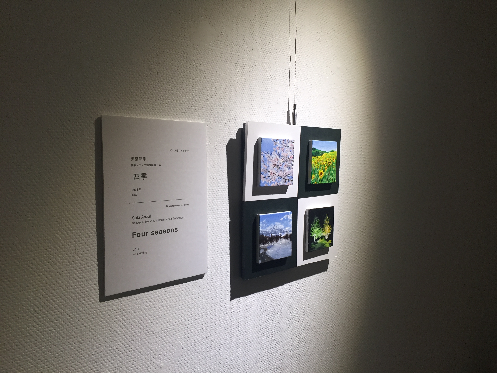
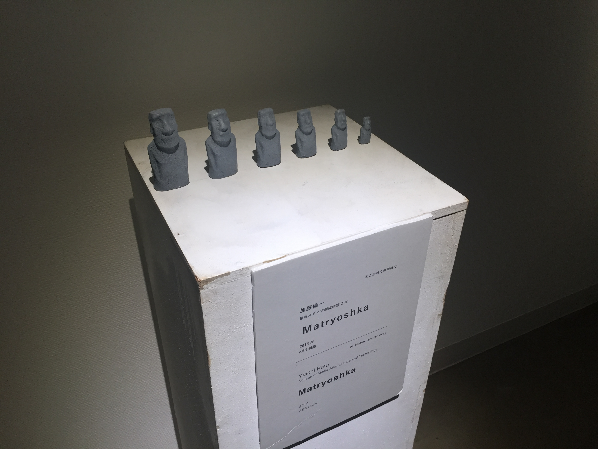
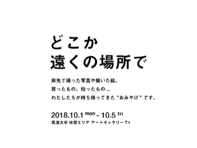
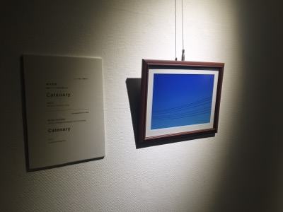
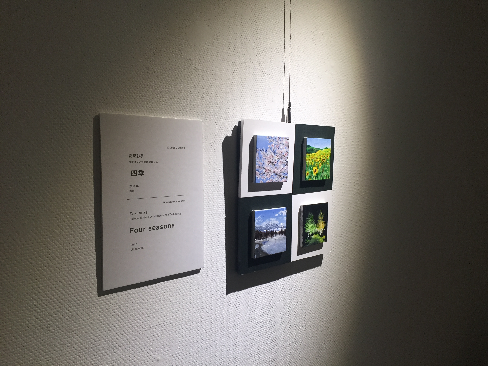
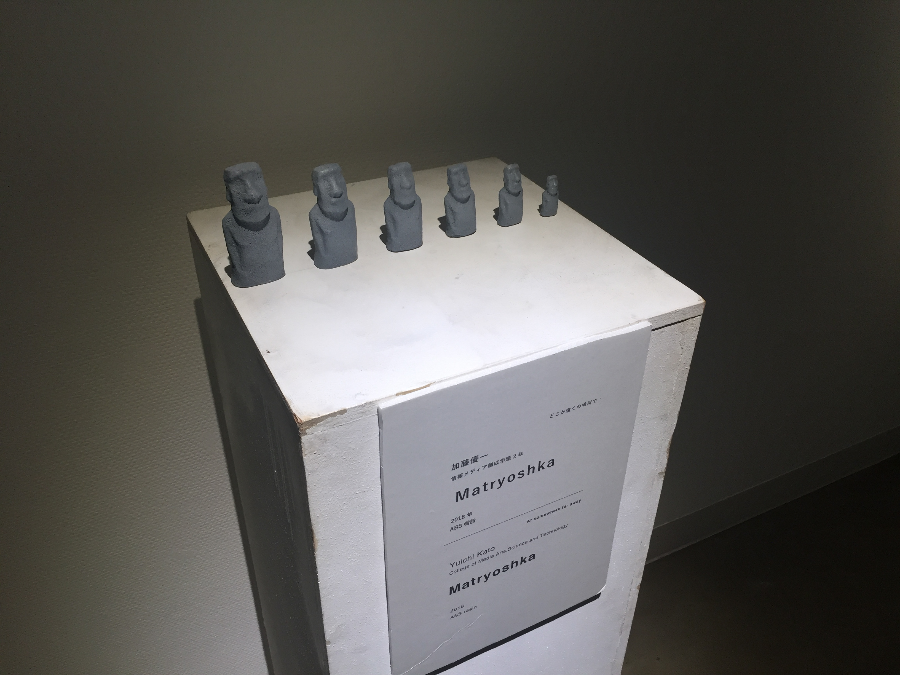
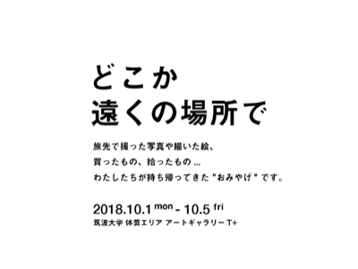
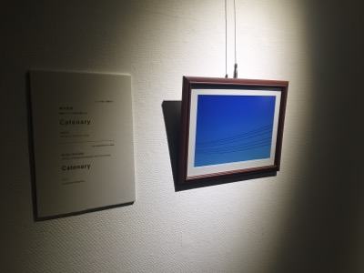
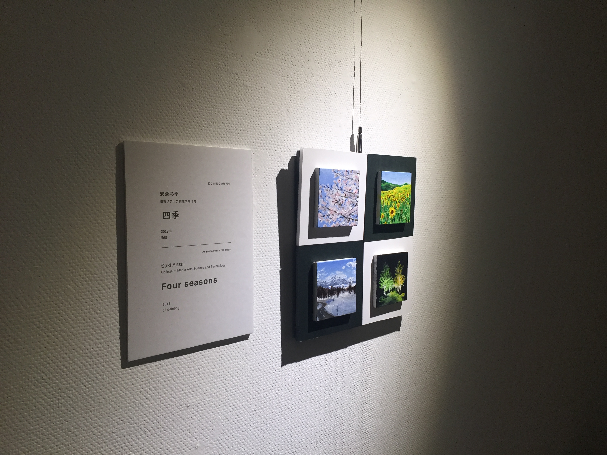
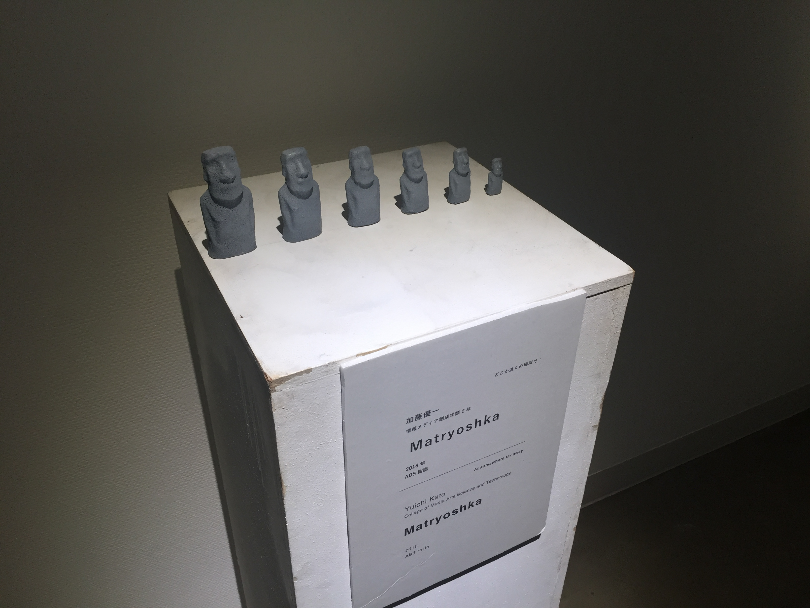
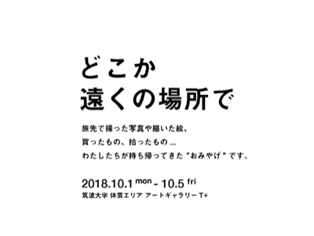
筑波大学 情報メディア創成学類の2年生の有志による展示会。「旅先で手に入れたおみやげ」というテーマで制作。CG、油絵、インスタレーション、メディアアートなど様々な分野の7つの作品を展示した。
Theme
旅先で撮った写真や描いた絵、買ったもの、拾ったもの... 私たちが持ち帰ってきた"お土産"です。
Credits
- 企画：小貫智弥
- 展示：安斎彩季、稲田和巳、小貫智弥、加藤優一、金子紫苑、種村優佑、松浦一輝
- サウンド：金子紫苑
- 協力：岡本太久斗、筑波大学アートギャラリーT+
- 場所：筑波大学アートギャラリーT+
- 日時：2018年10月1日(月)〜10月5日(金)